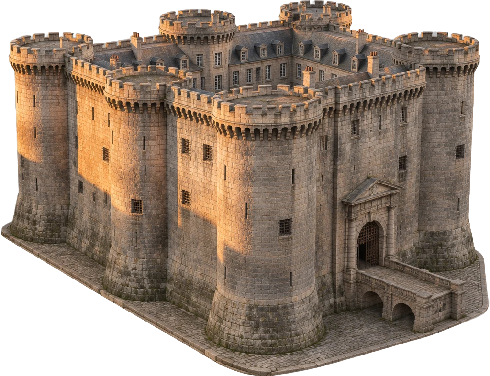
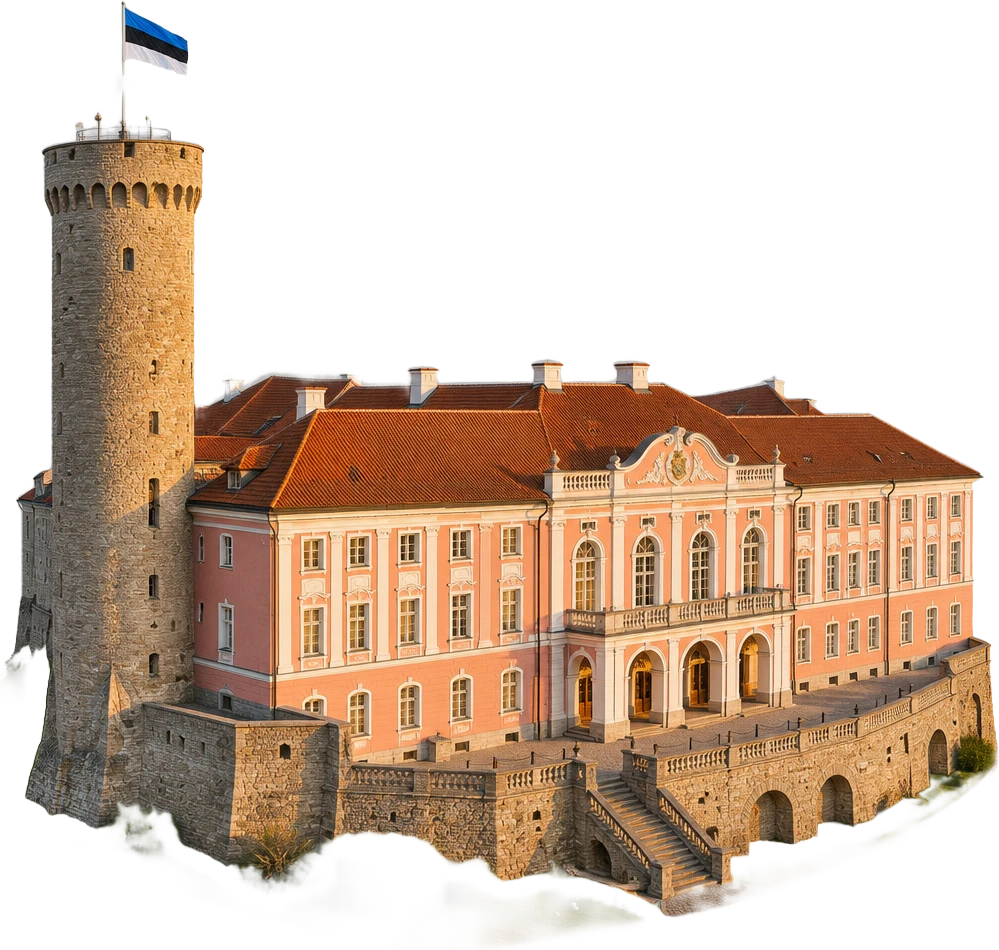
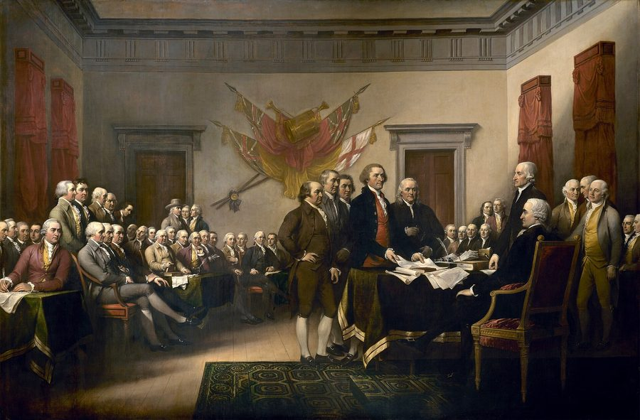
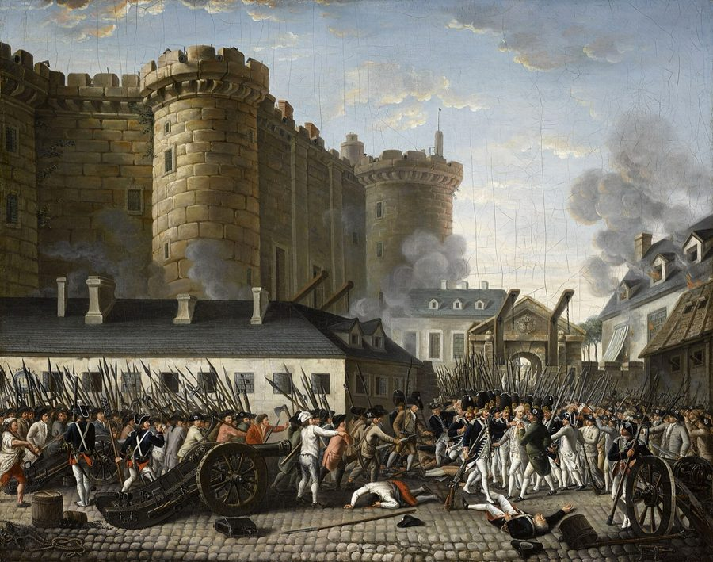
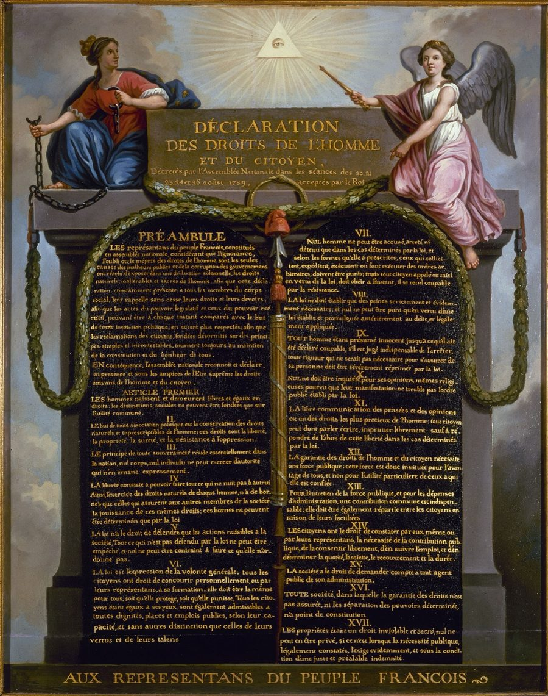

Mis ühendab 18. sajandi deklaratsioone tänapäeva demokraatiaga ja mis on muutunud?

J. Trumbull, 1819
Bastille' vallutamine, 1789
Õiguste deklaratsioonTahtsid ise otsustada, milliseid makse maksta – Briti parlamendis polnud neil ühtegi esindajat.
Uued maksud → iseseisvussõda → 1776
Nõudsid õigust rääkida kogu rahva nimel – nemad kandsid maksukoormust, aadel ja vaimulikud mitte.
1789 kuulutasid end Rahvuskoguks
Sarnasus. Mõlemal juhul: kes maksab, peab saama ka otsustada. Maksuküsimus muutus küsimuseks, kellel on võim.
Erinevus. Ameeriklased lõid uue riigi ja lahkusid Briti alt. Prantslased muutsid oma riiki seestpoolt ja piirasid kuninga võimu.
Küsimus klassileKas maksaksite makse, kui ei saaks üldse otsustada, milleks neid kasutatakse?
„Valitsuse võim põhineb inimeste nõusolekul“
„Võimu allikas on rahvas“
„Kõrgeima riigivõimu kandja on rahvas“
Kodanikud alates 18 valivad Riigikogu. Igal ühel on üks hääl ja hääletus on salajane. Kui rahvas pole rahul, valib ta järgmine kord teisiti.
„Inimesed sünnivad vabadena ja võrdsete õigustega.“
1791 said hääletada ainult mehed, kes täitsid vanuse- ja maksunõude. Naistel valimisõigust polnud. USA-s jäi alles orjus.
Enamus tahab keelata valitsust kritiseeriva ajalehe
Sõnavabadus: igaühel on õigus arvamust väljendada (§ 45)
Kui õigusi rikutakse, saab pöörduda kohtusse (§ 15)
Otsustab seaduse järgi, mitte enamuse soovi järgi (§ 146)
Miks on kohtu sõltumatus tähtis? Kui kohus kuulaks Riigikogu enamust, poleks ajalehel kuskilt kaitset – enamus võiks vaigistada kõik kriitikud. Võimude lahusus (§ 4) tähendab, et Riigikogu ei saa üksi kõike otsustada.
Ühendab: võim pärineb rahvalt ja inimestel on õigused (allikad A, B, C)
USA-s enamasti varakad valged mehed; Prantsusmaal ainult mehed, kes täitsid maksunõude.
Eestis iga kodanik alates 18 (§ 57) – soost ja varast sõltumata; lisaks rahvahääletus (§ 56).
Õigused kuulutati välja, aga neid ei kaitstud: Prantsusmaal terror, USA-s orjus.
Eestis saab minna kohtusse (§ 15) ja kohus on sõltumatu (§ 146).
Vastus põhiküsimuseleIdee on sama, aga täna kehtib see kõigile ja õigusi saab kohtus kaitsta.
1 · Kes said Prantsusmaal 1791. aastal hääletada?
2 · Riigikogu tahab keelata ajalehe. Kuhu saab ajaleht pöörduda?
Kas mõni õigus, mida täna peame loomulikuks, puudub veel kellelgi?
Allikad: tunni lugemistekst (allikad A–C). Pildid: J. Trumbull 1819, „Prise de la Bastille“, J.-J.-F. Le Barbier (avalik omand); stseenid loodud tehisaruga.